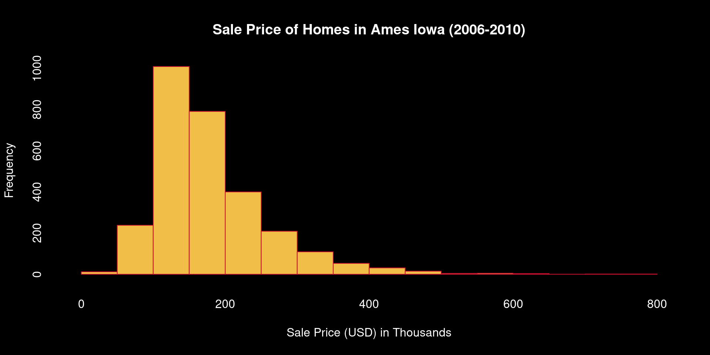
What’s a Model and how we plan hitches?
Seeds of Success Trainings 2024
Reed Clark Benkendorf
Senior Spatial Data Specialist & Senior Botanist
March 22, 2024
The World is Big
- 33 hour drive across the West on nice highways
- 2100 some miles
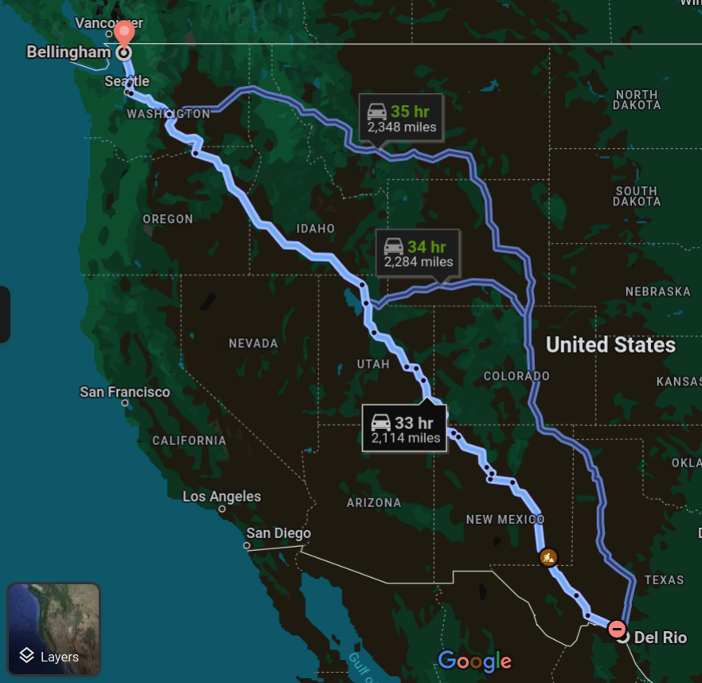
Really Really Big
- A single CBG Crews last couple hitches last Season
- 6 hour drive to start end collections
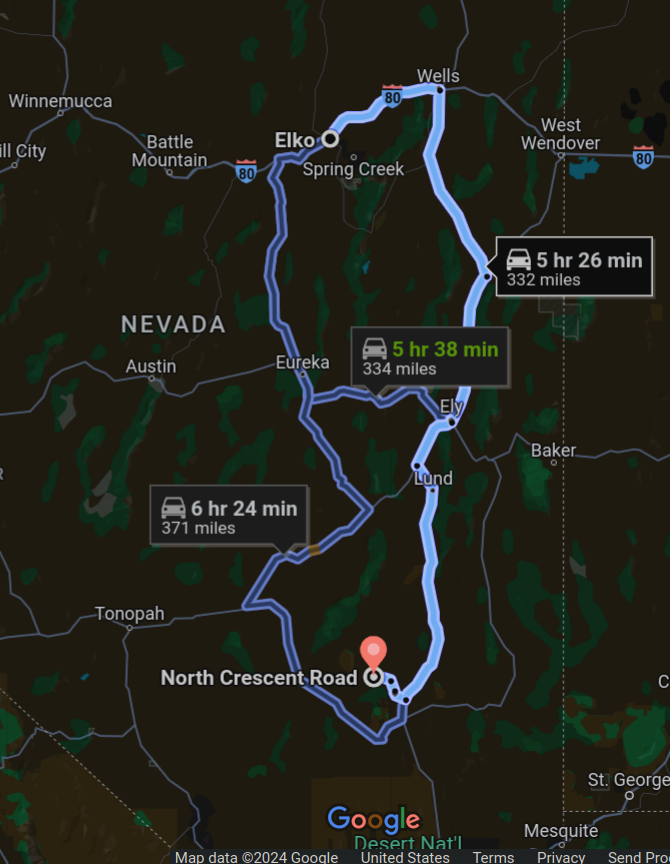
Priorities
- How are we doing?
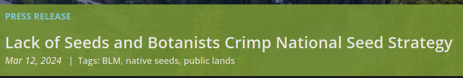
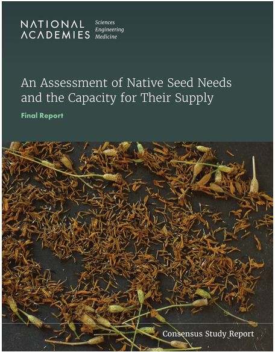
Plans
Improv?
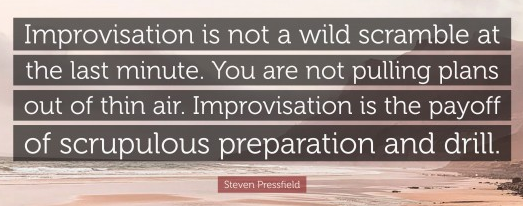
Planning is Preparation
Perseverance and Ideas
A hitch Plan
- A hitch plan is a tool.
- The process will familiarize you with your domain and species.
- Hitch plans can be made in Word, or any GIS (e.g. ArcPro, QGIS)
Hitch Plan Specifics
- Populations
- Coordinates
- Order of Visits
- Write plans down.
- Screenshot/Maps on page 2
Consideration 1: Phenology
- Transitions between major life history events
- Scouting best performed during flowering
- Collection performed during late into fruiting, before dehiscence/dispersal
- Varies year to year
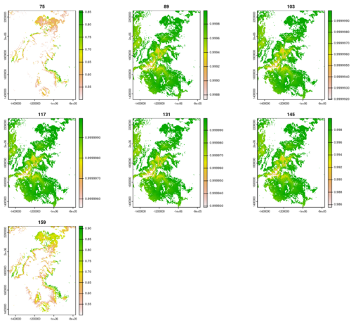
Consideration 2: Distance
- there are 40 hours in a week, use them wisely.
- time during scouting - abundant, collection time - scarce
- long drives to disparate populations are commitments
- driving is your most dangerous activity
Cons. 3: Disturbance, Land Management History
- Wildfires, excessive recreation, historic grazing, have lead to virtual biological dead zones
- avoid burn scars after ca. ~2000
- consider total change intensity index
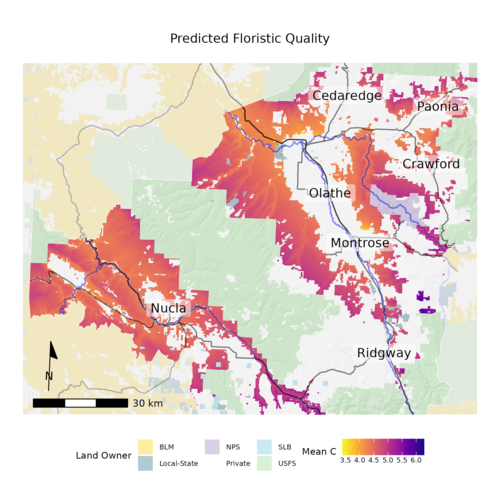
Cons. 4: Data Quality
- geo-location accuracy varies
- species mis-identifications are common
- population size ebb and flow
Cons. 5: Soil Moisture
- many species will produce below average amounts of seeds in dry years.
- soil moisture is a balance between precipitation and evaporation
- drought indices are devised to capture these
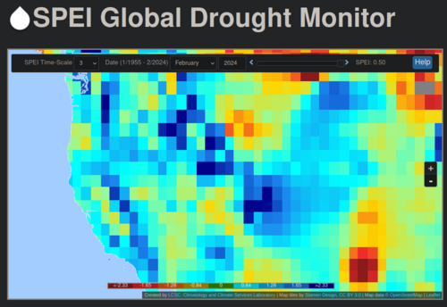
What’s a Model?
- a simplified representation of complex phenomena
- gives us an easy way to discuss trends
- can be trained on subsets of data, and applied to unseen data
- used to predict or understand a specific question
Why a Model?
The questions/problems/tasks define the structure of the Model.
- Domain (extent of analysis in Space, and Time)
- Grain (resolution of analysis in Space and Time)
- Data Acquisition
- Number of Simulations
- Estimates of Uncertainty
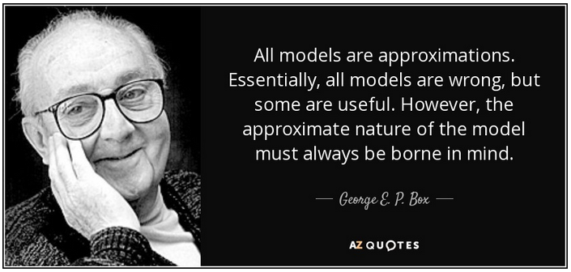
Responses
- A variable (dependent variables) which changes due to an effect (predictor/independent variable)
- The price of a house is predicted by it’s size, quality, neighborhood, etc.
- Want to understand the trend of a response in relation to a predictor
- Usually easy to collect data predictor data, which with a model can then be used as a surrogate of the response
What do data respond to? Predictors
- Many processes (responses/dependent variables) are effected by others (predictors/independent variables)
- The Price of a house is predicted by it’s Size.
- Predictor variables are often collected by systematic data acquisition campaigns
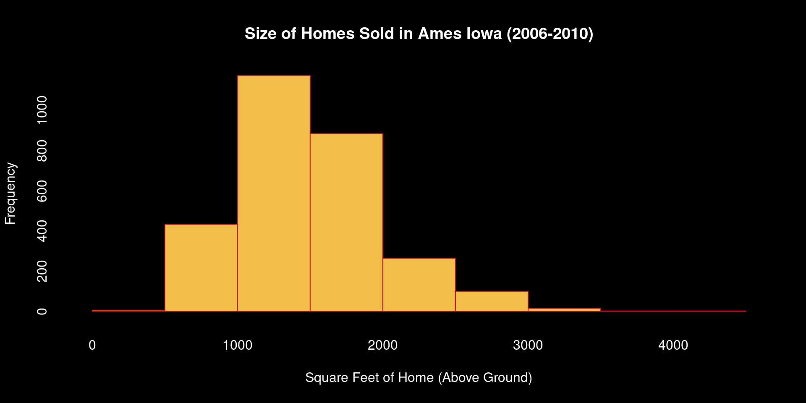
How do we express this relationship?
- x predicts y; a linear relationship between them is represented via a regression line
- slope change in values, rise over run.
- intercept mean value of response variable, when all predictors equal 0
- a 0 square-foot house, the intercept, would cost $4418; sometimes the intercept does not provide interpretable information
- for every 1 square-foot increase in house size, it’s price goes up by $118
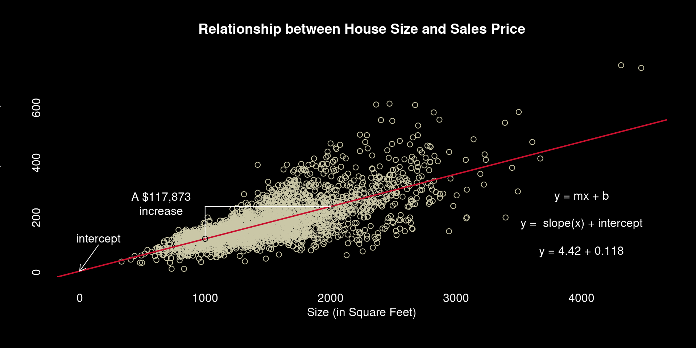
How do we express uncertainty?
- We rarely ever know the true values of a parameter at the population level
- Our statistics run on our sample are not totally accurate
- We quantize and consider this variability
- Confidence Interval the probability that the estimated parameter will fall between two values
- Confidence Levels a level at which to estimate a CI, e.g. so that the CI captures the true population parameter 95% of the time.

Overfitting
- If we want a better understanding of House Price, we can use more variables
- However, not all combinations of variables exist in a data set.
- If we use too many variables we can lose the ability to generalize our findings to unseen data.


Underfitting
- omitting key variables leads to less capacity to model a process
- goodness of fit amount of variance in the response which can be explained by the predictor(s). R2.
- calculated using residuals the distance along the y axis from the regression line to the observation
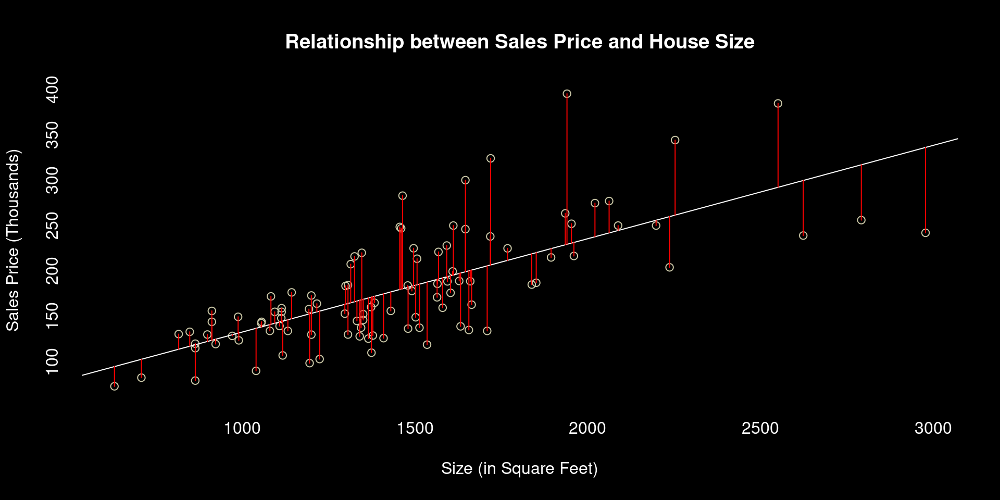
| Independent Variables | R-squared |
|---|---|
| Above Ground Size | 0.53 |
| Total House Size * Year Remodelled or Built | 0.85 |
Balance
- A balance exists between the number of predictor variables, the predictive power of the model, and the ability of it to generalize.
Prediction
- Going from the relationship represented via our test data and model to estimating on new data.
- Can our model predict values of responses from our predictor variables?
- Prediction Interval

Can Space be put into a model?
- We know that spatial relationships often times affect variables
- For example, many people like to live in certain school zones, near office districts, or in parks.
- Here we hold all values of our predictors constant, and predict how house price is affected solely by geographic location.
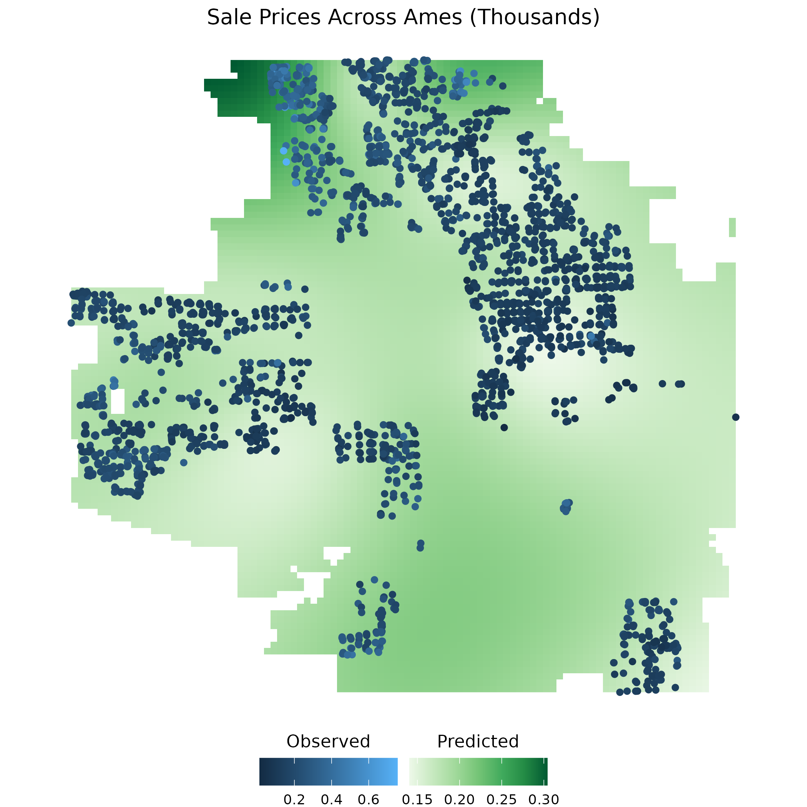
What’s a Species Distribution Model?
- using known occurrences of a species, identify areas which have similar habitat and the potential to support populations
- occurrences as a response, environmental variables as predictors
- generate statistical model
- project model onto gridded surfaces to make maps
Data Sources
- Opportunistic
- Herbaria Consortia
- INaturalist
- GBIF
- Herbaria Consortia
- Standardized
- USFS, BLM, NPS
- VegBank, Research Projects
- USFS, BLM, NPS
Predictor Variables
- 44 variables max, most models grab 10-15 variables
- Soils (texture, pH, salinity, depth to bedrock, fragments)
- Geomorphology (slope, aspect, topographic position, elevation)
- Vegetation (forest, shrub, herb cover)
- Temperature (min/max/mean coldest/warmest season/month, seasonality)
- Precipitation (mean annual, min/max coldest/warmest season/month, humidity)
- Growing season (number of days, heat accumulation 0/5/10 degrees)
- etc.
Predict onto Surfaces?
- Nearly all models can be predicted onto gridded surfaces if variables exist as rasters.
- here we have masked areas with < 60% probability of suitable habitat
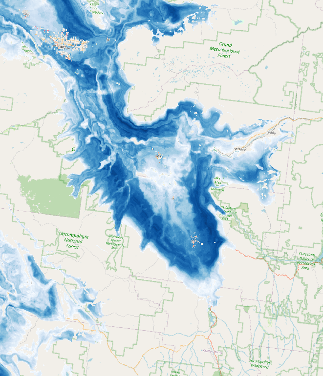
“But what about the forest?”
- Competition? Dispersal Limitation? Mutualisms?
Interpretation
- The Probability of Suitable Habitat
- no guarantee a population is established, just that one could probably grow there.
- We restrict the spatial data you have to occupied and connected basins and BLM land
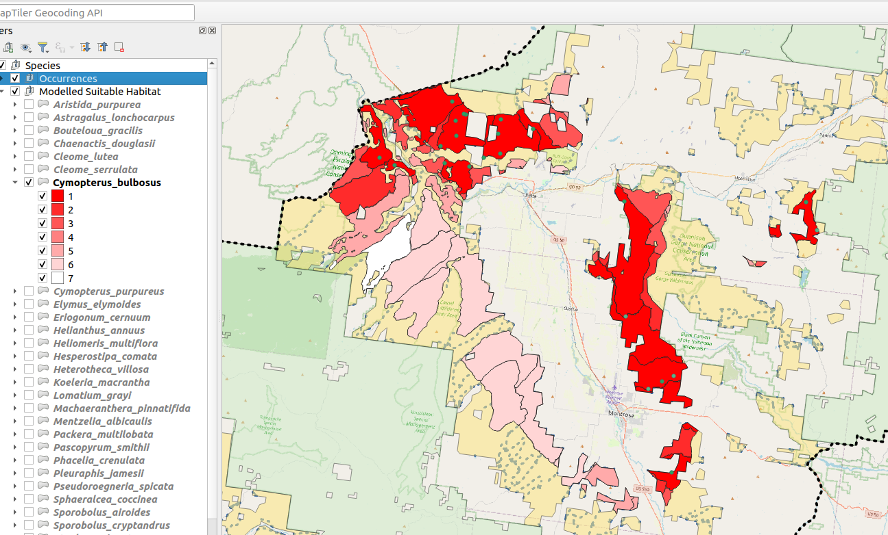
What are these Phenology things?
- You should have estimates of the flowering order of all your species.
- Some Warm Desert species, notably Grasses & Shrubs, which flower over Winter or multiple times have known problems (and solutions).
- Geographic ‘Extent’:
- Extent: Known Species Range or Western US.
- Extent: Areas within Range hypothesized by SDM’s as suitable habitat.
- Extent: Known Species Range or Western US.
- Grain
- Time: Biweekly intervals.
- Space: 1 kilometer cells.
- Time: Biweekly intervals.
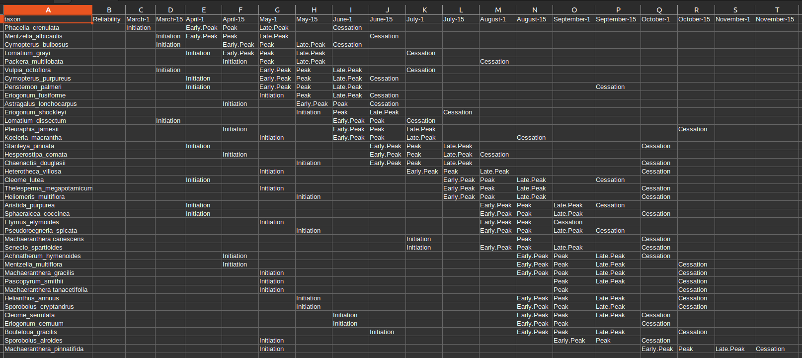
Data Sources
- Opportunistic
- Herbaria
Predictor Variables
- number of growing degree days 0/5/10 (ngd)
- heat accumulation 0/5/10 (gdd)
- annual snow water equivalent (swe)
- mean monthly vapour pressure deficit (vpd)
Use Models as tools to help you plan hitches.
Tools